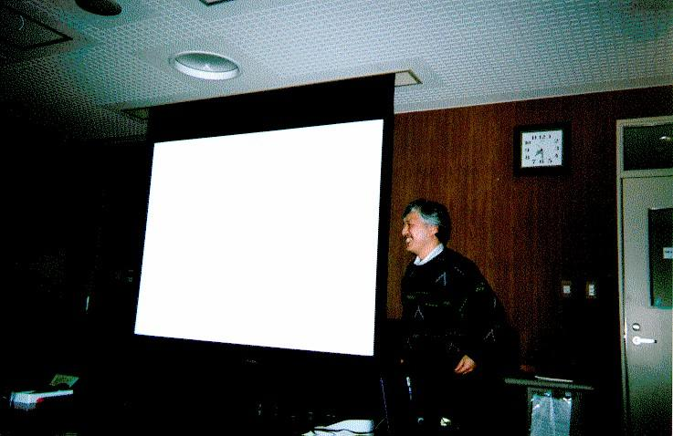

新宿駅より京王線，調布駅(特急で2つ目，15分) 北口下車， 北西方向徒歩12分程度．交通案内は(http://www.uec.ac.jp/)から IS 棟については次の図か守衛さんに聞けばわかると思います． (http://www.uec.ac.jp/campusnai.html)
企業やキャンパスネットワークで一般的に使用されている動的経路制御に OSPF(Open Shortest Path First)プロトコルがある。 このOSPFは管理者が設定する静的なリンクコスト値を用いた経路制御を行って いるが、このリンクコスト値を利用状況に応じて動的に変えることで、より正 しい(効率の良い)経路制御を行うことを目指す。 OSPFに対応したgatedをPC-UNIX上で動作させ、動的にコスト値を変更すること で経路制御にどう影響するかを考察した。
組込み計算機などの分野の発達により、小型の計算機上でのソフトウェア開発 は重要な研究課題となりつつある。特に、スタンドアロンで動き、適当な入出 力装置のある計算機の使い道は、今後、研究テーマとしても面白い。 このような背景を鑑み、本発表では、それなりに機能があり、しかもプログラ ミングできる小さな計算機たちと、そのプログラミング環境についてまとめた。 話は20年前の手作りマイコンの時代から始まり、シャープのポケコン、各種ワ ンチップマイコン、近年のGameBoy, ruputer, Palm Pilot, Pocket Stationな どに及んだ。特に、個々の計算機のハードウェアの仕様、アーキテクチャに関 する情報、開発用環境などに注目し、それらの充実度という観点から説明した。 また、各所に価格の目安を示し、社会との関連も示した。
次の予定（いわゆる「PTT呑み会」）が差し迫っていたため、トーク終了後 の質疑応答はあまりなかった。しかし、東工大の大島さんがZaurus ICRUISE上 で動くSqueak (a la small-talk)を公開し、盛り上がった。なお、トーク途中 には、「そのマシンは使っていた」などというおぢさんの声もかかり、この分 野に隠れたファンの多いことが明らかとなった。
だって、最近の計算機は、キャッシュとか、メモリ管理機構、グラフィク スアクセラレータなど、様々な高機能ハードウェアが装備されていて、ＯＳな しに遊ぶのは大変なんだもん。IBM-PCなんて、gdtを設定して保護モードへ移 行するだけで嫌になっちゃう。数々のノウハウと戦いながら膨大なソフトを書 かなければ、画面に文字を出すこともできないんだもの。それに比べたら、と あるアドレスのbitを１にすると画面の１点が黒くなる計算機って可愛いじゃ ん。一晩あれば、超面白いソフトが動いてしまうしぃ、マイコン黎明期のワク ワク感も味わえちゃう。あれ、でも、これって、もしかしたら道楽研究？
お歴々である。(懇親会の様子)
話者の川崎さん。Psionオーナー。

多田先生の発表の様子．
川崎さんの発表の写真もあるのですが，川崎さんはまれに見る腰の低い発表で
OHP を変更する際には直立することはなく，直立している唯一の場所はあまり
にスクリーンから遠方にあり，川崎さんの発表の様子の写真は暗くて人物が見
えませんでした．．．